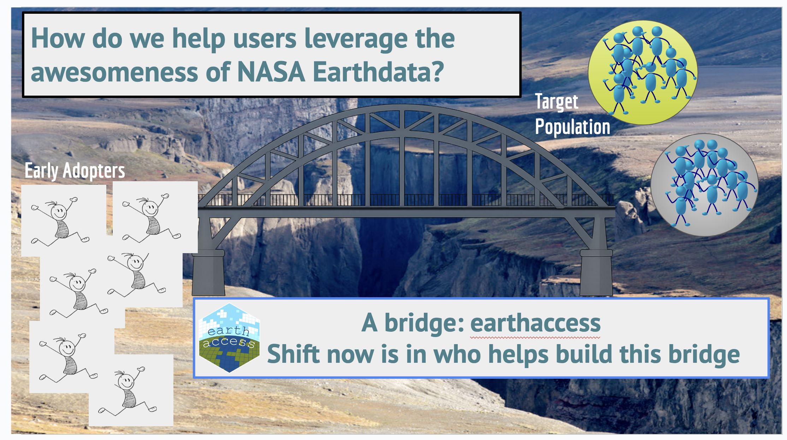
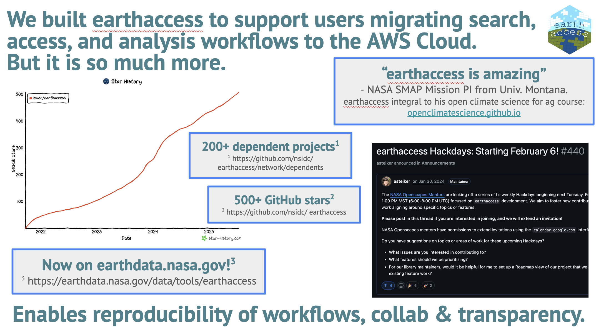

earthaccess — helping users leverage the awesomeness of NASA Earthdata
Amy Steiker ![]()
Luis López
Danny Kaufman
Joe Kennedy
Chris Battisto
Andy Teucher
Stefanie Butland
Julie Lowndes
On July 29, 2025 Openscapes hosted a Community Call to celebrate earthaccess: a Python library helping users leverage the awesomeness of NASA Earthdata. This was a chance for NASA Earthdata scientists and user support staff to share talks that the NASA Openscapes Mentors prepared for the ESIP summer conference. Designed for an audience with many different interests and experiences with earthaccess, we started with stories for all to retell, shared exciting new technical development and features, and ended with a vision going forward. We had 67 people attend (planned with 10 days notice), and 40 attend live! Below is a short summary; we encourage you to review slides and recording!
Quick links:
- Community Call YouTube Recording
- Speakers Slides
- Community Call Collaborative Notes
- Join as an
earthaccesscontributor https://earthaccess.readthedocs.io/en/latest/contributing
Cross-posted at openscapes.org/events, nasa-openscapes.github.io/news
Why are people interested in the earthaccess python library? As you’ll see, we built earthaccess to support users migrating search, access, and analysis workflows to the AWS Cloud. But it is so much more. From background that we had previously drafted:
NASA’s goal to support Earthdata users migrating to cloud-based workflows would not have been as successful without the
earthaccessPython library.earthaccesssolves critical and previously obscure barriers to code-based data access for many users working in the cloud: authentication (via Earthdata Login), search (via the Common Metadata Repository), bulk download, and direct access to (Amazon Web Services [AWS] ) object stores.earthaccessprovides a unified approach to reproducible data search and access, whether users work on a local machine or in the cloud, and regardless of where data are stored. Being widely used, community developed, and with 200+ dependent projects,earthaccesshas become a success story integral to NASA’s broader Earthdata Cloud adoption.
Crossing the Chasm at NASA Earthdata with earthaccess
Amy Steiker started off by sharing about the initial chasm between users and Earthdata Cloud, using the “Crossing the Chasm” framing in relation to the earthaccess origins. Eli Holmes (NOAA Fisheries) led the Crossing the Chasm session at ESIP last week, presenting how ideas spread through an organization and the challenging gap between early adopters and broader adoption. Amy shared how earthaccess was built as the bridge to support users adopting cloud workflows, enabling seamless search, authentication, and access (Figure below).

earthaccess, as a bridge across the chasm.Amy shared the impact of earthaccess using statistics on usage and contributions from the open development community. And while there are new challenges in the face of budget uncertainties and a lack of sustained funding, the intentional culture and community building remains critical to the library’s success. We can now flip the question of how to support earthaccess, and instead ask: How can earthaccess support NASA Earthdata? Amy concluded by sharing a vision we’re building of “earthaccess with batteries included” (credit to Andy Barrett, NSIDC) and “Widening the bridge”, inviting contributors shape the future!

earthaccess statictics: enabling reproducibility of workflows, collaboration, and transparency.Amy emphasized how partnerships are critical. She shared how earthaccess won the ESIP FUNding Friday $5k, an annual mini-competition awarding small projects that are inspired by ESIP collaboration or participation. We plan to use funds to host an earthaccess hackathon at the AGU December meeting - virtually and in person! (Here is the FUNding Friday video pitch 🥳🎶, illustrative of the social infrastructure underpinning how we work. We will continue telling this story, and also trying to document the timeline getting there).
New features and VirtualiZarr
Joe Kennedy’s presentation on virtual datasets focused on how cloud computing paradigms enable small teams to generate near real-time mission-scale derived data products. He showed how virtual datasets are used by the ITS_LIVE project to provide low-latency access to global glacier velocity data from multiple optical, radar, and laser satellite sensors. This is achieved by extracting time series of measurements from a particular location and computing velocities by measuring the distance moved over time. Zarr datasets support this targeted extraction natively. Virtual datasets make this possible for other data storage formats by utilizing metadata (via the kerchunk python library) that allows extraction of data for a particular location and time, rather than having to process the entire granules.
Joe put forward a vision where earthaccess can generalize this access pattern for all datasets. This work is underway through integrating VirtualiZarr and Icechunk into earthaccess. He emphasized critical challenges in implementing virtual datasets effectively. The core issue is that cloud optimization isn’t just about file formats - it’s fundamentally about aligning data organization with data access patterns. Data providers face difficult trade-offs: chunking data temporally optimizes time series analysis but degrades spatial access performance, and vice versa. Additional complexities include handling authentication, and navigating institutional policies around data egress and regional deployments. Joe stressed that success requires alignment between data providers, services, and community adoption.
Deeper specifics with VirtualiZarr
Chris Battisto talked about updating and managing VirtualiZarr stores using Icechunk. He highlighted two main approaches for creating Earth data cubes using xarray with NASA Earth data: direct Zarr store access with spatial/temporal subsetting (which requires being in AWS US-West-2), and individual granule download and concatenation (common but memory and storage-bound).
He then explained a third way: Create virtualized datasets with VirtualiZarr, and store (and update) with Icechunk. While virtualized datasets offer significant advantages in terms of scalability and efficiency, Chris noted there are still challenges in getting them to work with all NASA Earth data collections. He encouraged the community to experiment with these tools and share their experiences through the earthaccess GitHub repository, and provided documentation links for getting started with both VirtualiZarr and Icechunk implementations.
Next, Danny Kaufman presented on using virtual datasets with TEMPO (Tropospheric Emissions: Monitoring of Pollution) data. TEMPO monitors air pollution over North America and generates substantial data volumes: approximately 10 Level-2 (L2 - non-gridded) granules per hour and about 5,000 Level-3 (L3 - gridded) granules (2.5 TB) annually. Danny found that L3 data products worked well with earthaccess’s virtual dataset implementation, which substantially reduced data access time from about one day when downloading to just ~10 minutes. This dramatic improvement was possible because L3 TEMPO data has both consistent dimension sizes and pre-generated DMR++ reference files, which contain chunk manifests with byte ranges for efficient S3 access. In contrast, L2 TEMPO data failed to work as virtual datasets because of inconsistent dimension sizes across granules, which isn’t compatible with current Zarr specifications.
Danny showed that roughly 15% (given several caveats) of NASA Earthdata collections have the necessary DMR++ files that are both downloadable and parseable by VirtualiZarr. To further streamline access, the team is working on creating combined reference files that don’t rely on DMR++ for the entire Level 3 TEMPO collection. As with all of these initiatives, Danny emphasized that documentation and community learning remain crucial for broader adoption.
Bringing It Home
Luis Lopez brought us home with a presentation focused on earthaccess’s role as a bridge between the current state of NASA Earth Data and a future cloud-native, analysis-ready archive. He emphasized that earthaccess serves as a crucial abstraction layer that helps scientists navigate the complexities of NASA’s data systems. Currently, the library is working to implement smart data access patterns, particularly through virtual data cubes, to enable efficient scientific analysis whether users need time series data or multi-file operations. The immediate technical priorities include handling distributed authentication, optimizing metadata reads, and improving I/O operations.
Looking forward, Luis highlighted a fundamental shift in thinking about NASA’s data challenges, quoting Patrick Quinn: “Stop Building Tools. Start Fixing Data.”. He stressed that data should be harmonized and optimized at the source, which would reduce the need for numerous APIs and workarounds. The overarching mission for earthaccess is to continue bridging the gap between the current fragmented state of NASA data archives and an ideal future where data can be accessed with the same simple three lines of code regardless of the underlying complexity. This vision aligns with the broader goal of preserving simplicity for users while handling the technical challenges behind the scenes.
Resources
To join as a contributor: https://
earthaccess.readthedocs.io/en/latest/contributingFrom Chris Battisto’s slides
VirtualiZarr Docs
Icechunk Docs
Speakers
Amy Steiker, National Snow and Ice Data Center (NSIDC) Distributed Active Archive Center (DAAC). Amy specializes in the usability and accessibility of NASA Earthdata. She has been a NASA Openscapes Mentor since 2021, working to foster the growth and sustainment of the
earthaccesscommunity.Luis Lopez, NSIDC DAAC, is a Research Software Engineer at the National Snow and Ice Data Center (NSIDC) in Boulder, Colorado. He has helped develop tools and services to facilitate data access and discoverability across different NASA Earth missions. He is a passionate advocate of open science and has contributed to open source projects such as Apache Nutch, PyLDAVis and others. He’s always happy to help scientists find ways to make their workflows more efficient. Luis has presented his work at SciPy LATAM, PyData Global and the IEEE annual Big Data symposium.
Danny Kaufman, Atmospheric Science Data Center (ASDC) DAAC. Danny’s background includes ocean and climate data analyses, development of decision support tools for pollution management and data pipelines for natural language processing. He currently supports ASDC with the TEMPO air quality mission, with NASA’s Open Science initiative, and as a NASA Openscapes Mentor since 2023 — co-developing and delivering tools and learning materials to facilitate user-friendly access to NASA Earthdata.
Joe Kennedy, Alaska Satellite Facility (ASF) DAAC is a Staff Scientist at the Alaska Satellite Facility, a Computational Glaciologist, a Climate Scientist, and an Adventurer living/playing in Alaska ⛄. He develops (primarily) Python-based, open-source scientific software and focuses on scientific workflows that scale from laptops to HPCs or the Cloud.
Chris Battisto, Goddard Earth Sciences Data and Information Services Center (GES DISC) DAAC. Chris Battisto is a senior scientific developer and a member of the GES DISC User Needs team, working to curate and contribute tutorials that connect scientists of all experience levels with NASA Earthdata across several programmatic tools. He regularly collaborates with Openscapes as an existing mentor, and is an ESIP Committee Member.